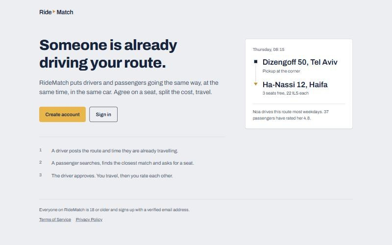
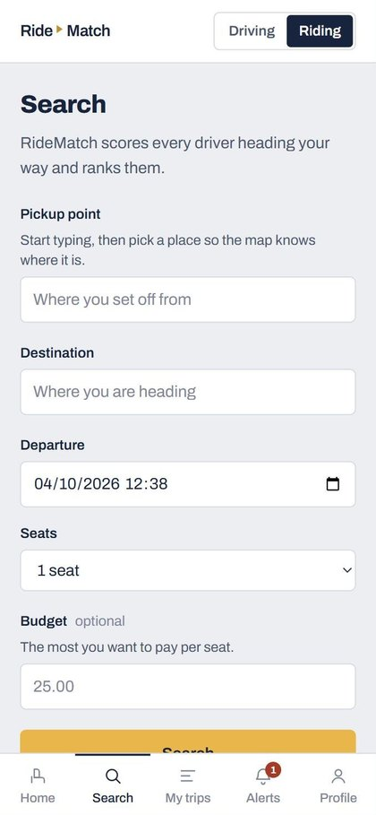
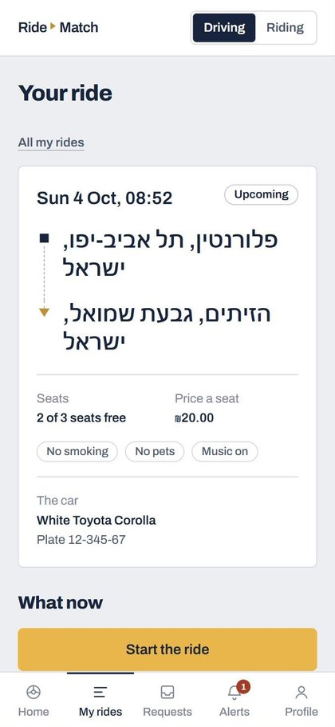

RideMatch
A ride-sharing web app, live in production.



Drivers post the route and time they are already travelling; passengers search, get matches ranked by how well they fit, and request a seat. The driver approves, they travel, and both rate each other. An admin panel handles moderation.
- Contract-first: an OpenAPI spec drives the backend and the generated front-end types.
- Tested at every layer with pytest, Vitest, Playwright end-to-end and Schemathesis fuzzing.
- Deployed on Render with a Neon PostgreSQL database.
- FastAPI
- PostgreSQL
- SQLAlchemy
- Redis
- React
- TypeScript
- TanStack Query
- Tailwind
- Clerk
- Mapbox